확정 캐스트 시트 7장 + 크기 라인업
gpt-image-2.5-sunburst · high · 1536×1024 · 7인 공통 연필 가는 선(진한 웜그레이, 약한 입자): 성격별 기본 얼굴 + 턴어라운드 4 + 코믹 포즈 8. 제작은 정면·측면 선 샘플(<이름>-line-sample.png) 먼저 → 그 샘플 + 두부 연필선 샘플(스타일 참조)로 시트. 엑스트라 2장은 구판. 모든 시트는 소품 없음(망토 등은 에피소드별 지정).
크기 라인업 (시트 FRONT 도를 잘라 합성, 생성 아님)
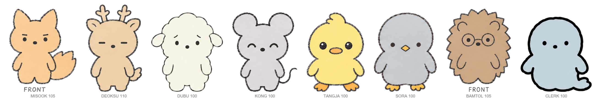
역할 기준 크기 (주인공 100): 아빠 110 / 엄마 105 / 남친 105 / 동생·친구 100. 실제 동물 크기와 무관하며, 귀·뿔·털에 영향받지 않도록 눈높이→발끝 거리를 기준으로 맞춘다. python scripts/lineup.py all --out …
동시 출연 참조 예시 — 두부 + 미숙
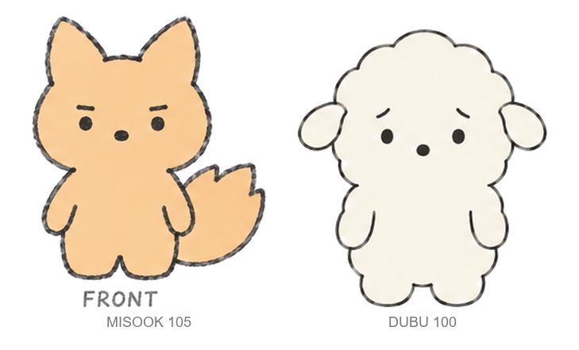
컷에 나오는 캐릭터만 골라 만든다: python scripts/lineup.py dubu misook --out episodes/epNN/ref/lineup.png → 컷 생성 시 --ref로 시트들과 함께 입력.
두부 — 주인공 · 양
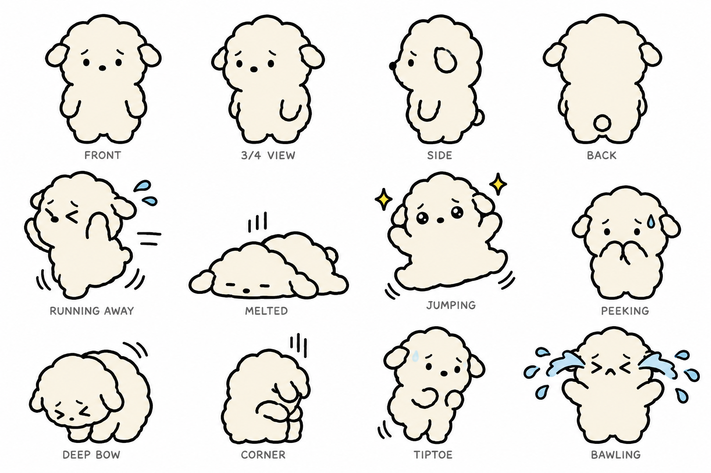
기본 얼굴 = 점 눈 + 걱정 눈썹. 2행: 도망 · 녹아내림 · 점프 · 엿보기 · 3행: 90도 사과 · 구석 · 까치발 · 통곡 · 단독 페이지 · 프롬프트 dubu-sheet-prompt.txt
미숙 — 엄마 · 여우 · 1.2배
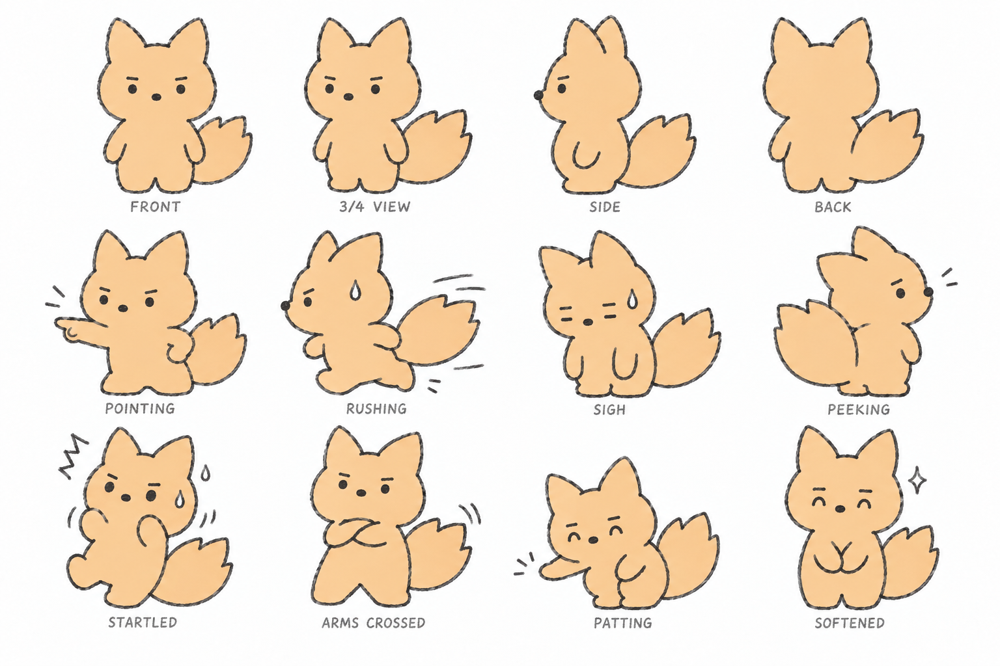
기본 얼굴 = 점 눈 + 낮은 일자 눈썹. 2행: 삿대질 · 종종걸음 · 한숨 · 엿보기 · 3행: 놀람 · 팔짱 · 쓰다듬기 · 누그러짐 · 프롬프트 misook-sheet-prompt.txt
덕수 — 아빠 · 사슴 · 1.2배
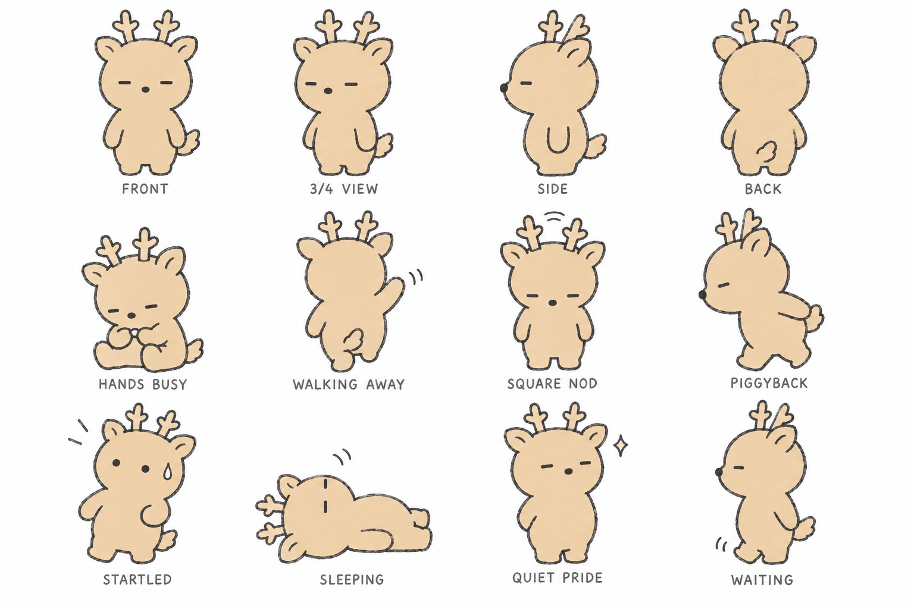
기본 얼굴 = 대시 눈. 2행: 손 바쁨(앉아서) · 뒷모습 손 인사 · 각 잡힌 끄덕임 · 업어주기 · 3행: 놀람 · 잠 · 조용한 뿌듯함 · 기다림 · 프롬프트 deoksu-sheet-prompt.txt
콩 — 남동생 · 쥐 · 0.8배
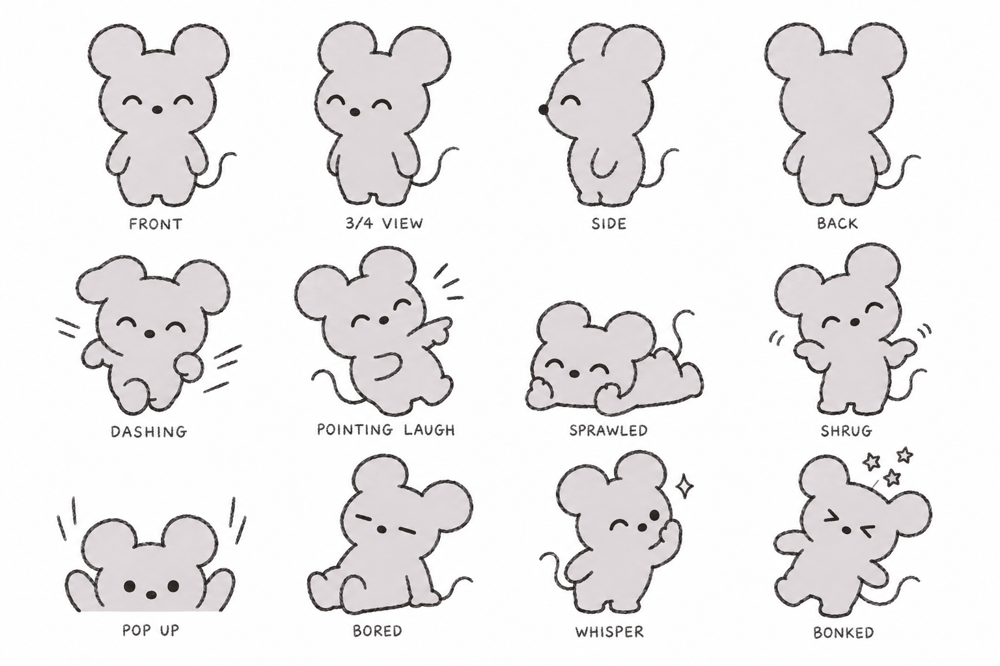
기본 얼굴 = 웃는 호 눈. 2행: 돌진 · 삿대질 웃음 · 엎드림 · 어깨 으쓱 · 3행: 불쑥 등장 · 지루함 · 귓속말 · 꿀밤 맞음 · 프롬프트 kong-sheet-prompt.txt
탱자 — 친구1 · 오리
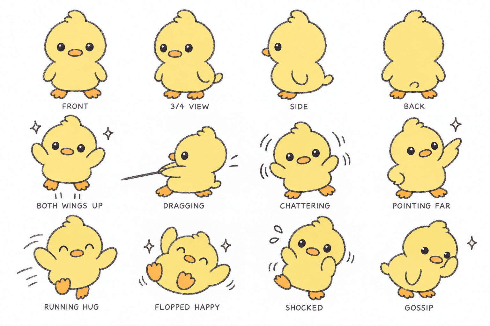
기본 얼굴 = 하이라이트 초롱초롱 눈. 2행: 양 날개 만세 · 끌고 가기 · 수다 · 저 멀리 가리킴 · 3행: 달려와 안기 · 뒤집혀 좋아함 · 충격 · 뒷담화 · 프롬프트 tangja-sheet-prompt.txt
소라 — 친구2 · 펭귄
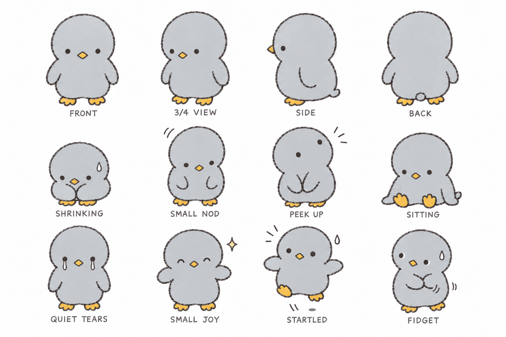
기본 얼굴 = 내리깐 점 눈 + 밀착 날개. 2행: 움츠림 · 작은 끄덕임 · 위로 곁눈질 · 앉기 · 3행: 조용한 눈물 · 작은 기쁨 · 놀람 · 꼼지락 · 프롬프트 sora-sheet-prompt.txt
밤톨 — 남친 · 고슴도치 · 1.1배
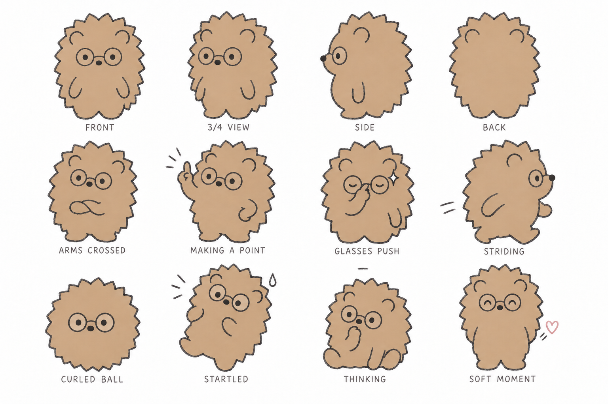
기본 얼굴 = 점 눈 + 브릿지만 있는 동그란 안경. 2행: 팔짱 · 설명 손가락 · 안경 올리기 · 성큼성큼 · 3행: 공벌레 · 놀람(안경 삐뚤) · 생각 · 등 뒤 하트 · 프롬프트 bamtol-sheet-prompt.txt
엑스트라 — 고양이 3인조 (주류 무리)
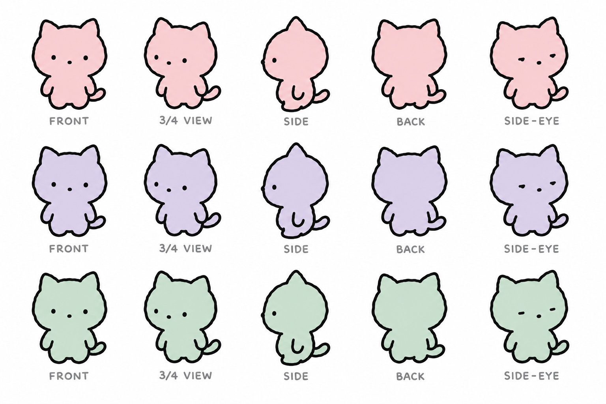
핑크 · 라벤더 · 민트, 같은 디자인에 색만 다름 · 각 행: 턴어라운드 4 + 아니꼬운 곁눈질 · 프롬프트 cats-sheet-prompt.txt
엑스트라 — 알바 점원 · 물범
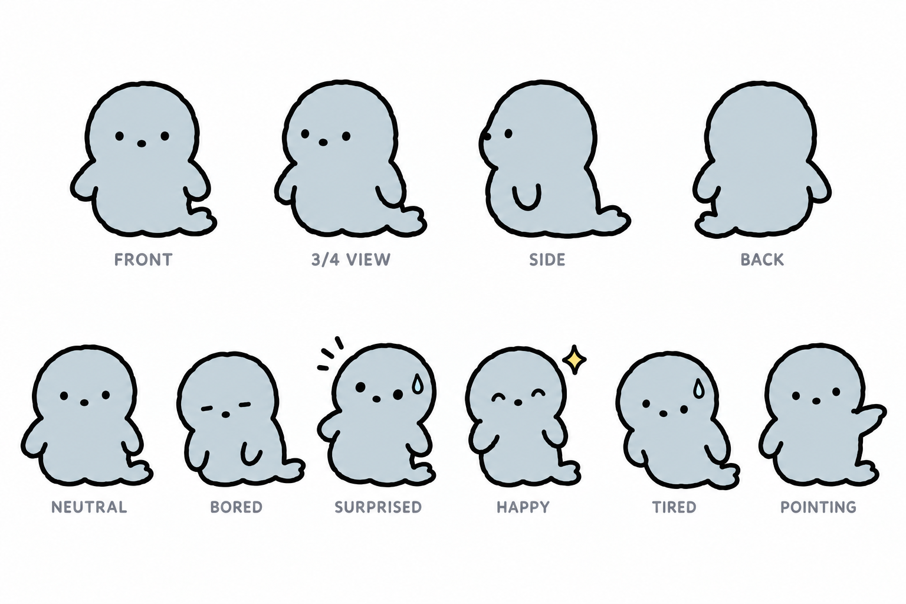
2행: 기본 · 지루함 · 놀람 · 기쁨 · 피곤 · 가리킴 · 유니폼은 컷 프롬프트에서 지정 · 프롬프트 clerk-sheet-prompt.txt